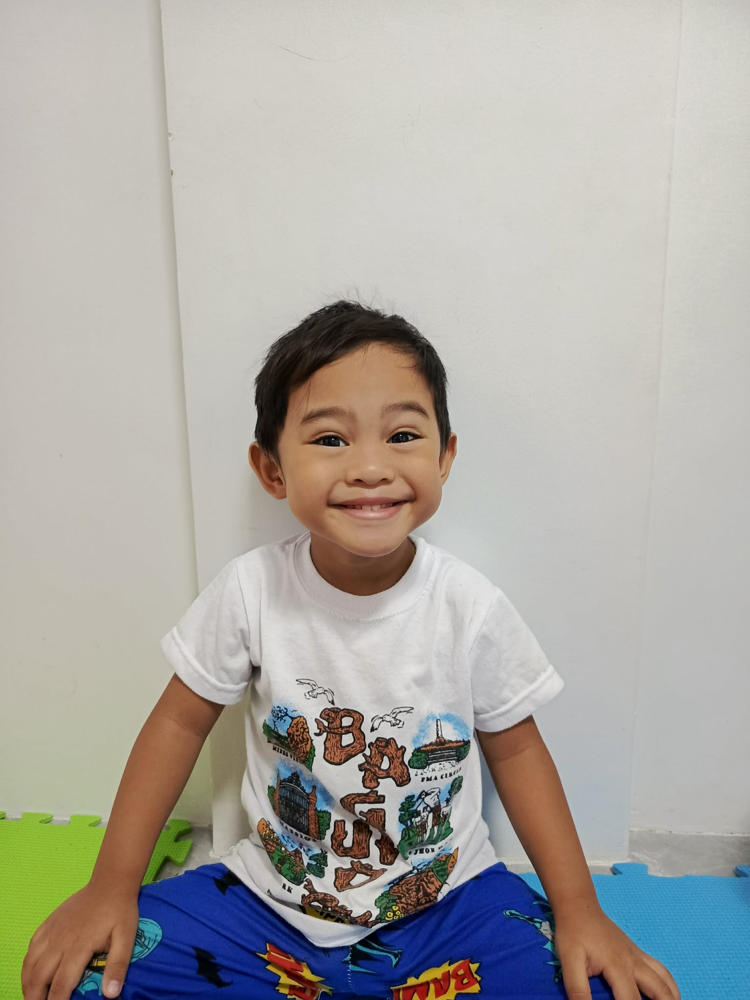

Welcome to my Website
Matt Andres P. Ablog
This is basic auto-biography content.
My name is Matt Andres Ablog, and I was born on March 1, 2023. My parents are Bernard Ablog and Rosa Maria Ablog. According to my mom, Rosa, I weighed only 3.8 lbs when I was born, and I was also born as a blue baby. Because of this, I stayed at the maternity clinic for one night before going home.

I have four siblings. In order, they are Rodge Matthew P. Grueso, who is 18 years old; Rodge Mattlee Punzalan, who is 17 years old; Mateo Ablog, who is 9 years old; and my favorite sister, Elise Ablog. Even though we are all different ages, we love spending time together as a family.
Right now, my family and I live in Dasmariñas. It's a place full of good memories, and I enjoy growing up here with the people I love. My favorite cartoon to watch is Teen Titans — I love how exciting and colorful the adventures are, and I hope to be just as brave as the characters someday.
In the future, I want to become a Lawyer. I want to help people and make a difference in their lives. I know it will take a lot of hard work and dedication, but I am willing to put in the effort to achieve my dream.